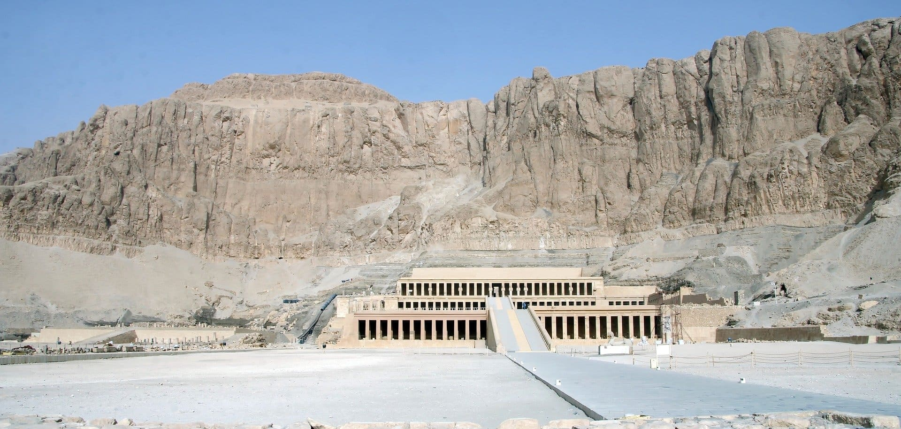

Monumentos
Piramides

Conociendo los misterios y costumbres de una de las civilizaciones más maravillosas del mundo
Recorre la historia y los misterios del antiguo egipto en nuestra galeria de imagenes
ImagenesEl Valle de los Reyes es una necrópolis del antiguo Egipto, cercana a Luxor, donde se encuentran las tumbas de la mayoría de faraones
Leer más
Valle de las Reinas es el nombre de la necrópolis del antiguo Egipto donde fueron enterrados reinas y príncipes de las dinastías XIX y XX, aunque también se han encontrado algunas de épocas anteriores.
Leer más
El Antiguo Egipto o Egipto Antiguo fue una civilización de la Antigüedad, que se originó a lo largo del cauce medio y bajo del río Nilo, cuya historia abarca más de tres milenios. Se la considera una de las más importantes de la humanidad.
Leer más
La historia del antiguo Egipto es larga y está repleta de misterios. Pero si hay una figura especialmente cautivadora y que representa en si misma los 3.500 años de civilización egipcia es la del faraón.
Leer más